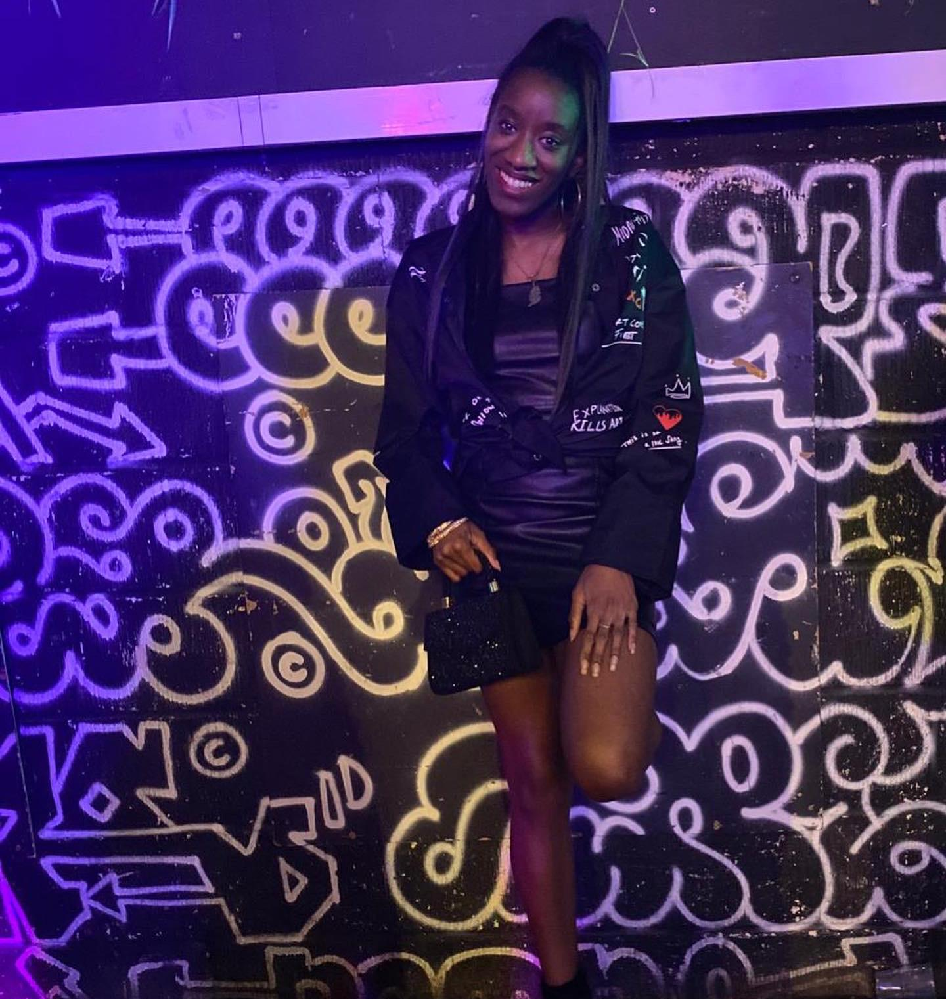

Nique J has followed house music for some time, through the dance battles of her teenage years to the UK funky coach trips of her university days, but she’s a relatively fresh face behind the decks in London. She started DJing in 2019, not too long before the UK’s first lockdown, and began by sharing music through social media livestreams as a way to keep herself and her friends’ spirits high.
This passion for music as a form of communal connection runs through nearly everything she’s involved in. Coming into DJing with a background as a professional dancer, Nique J is attentive to the way emotions and narrative can be built up and transferred through rhythm and movement. She truly values music’s expressive, therapeutic and healing qualities and, in the way that she talks about her journey so far, you can sense the earnest enthusiasm and excitement at building new friendships with DJs, producers and dancers around these shared experiences.
You can also hear Nique J’s optimism and upbeat sensibility coming through in her recorded mixes. She makes even the darkest, toughest amapiano and UK funky anthems sound surprisingly joyous, through the sudden introduction of a dancehall or bhangra acapella, by chopping into an amapiano flip of a ‘00s house classic, or leaving a ‘90s RnB edit lingering on over the next track’s heavy bassline. “It’s Nique J!!!” her 7-year-old goddaughters’s voice sporadically booms over the blends.
NKC: How did you get started out with DJing?
Nique J: My journey with DJing started when my dad organised a party holiday to Malta back in 2019. After experiencing the DJs there I said, ‘oh, I want to do that!’ When I came back, I spoke to a few friends who DJ and asked what I needed to buy and what software to use. And then I used to spend my evenings at home after work learning.
Before being a DJ, I was a professional dancer. I started doing battles in the UK and abroad, and I just wanted to experience what it was like to step over to the other side.
When I started doing livestreams on social media I was mainly playing salsa music and Latin sounds, because that’s what my friends missed during lockdown. Then it changed and I started doing livestreams playing grime, RnB, and started to throw in house. I want to shout out ZJ Sneaks, Play, Rocaball, Skills, RJ, Melo-D, Jerome Kidman and Dazzle UK for our Pirate Studio sessions too, which helped me get more confident on the decks.
NKC: Is dancing a full-time job for you? How does that tie in with DJing and playing house music?
Nique J: My full time job is in education – teaching and pastoral care – and then I also have dancing and DJing as well. But yeah, my love for music started with dance.
I gravitated to house because that and hip hop were my favourite genres to battle with. I loved the different sounds from being in a house battle, whether it was the first stage when you’re trying to get past the judges or the rounds when you’re competing against somebody.
When the style of house dance became popular in dancing classes and battles, I was 16 or 17. I fell in love with it straightaway, and from then I started to research the music. If we were in classes I’d ask ‘what song’s that?’ This is in the days of CDs, so people would have to make you a CD to share the music with you!
The freedom of expression that you have within dance has heavily influenced my DJing. When I connect with the music as a dancer, I ask myself – ‘what story am I trying to tell with my movement?’ Or, ‘how am I trying to make you understand the music?’ That’s definitely translated over into DJing, because now when I’m on the decks I ask those same questions. I want the people listening to come on this musical journey that I’m on as well.
NKC: How did amapiano and Afro house influence your DJing?
Nique J: In 2019, I went to an event before we went into lockdown and the track that I heard was Prince Kaybee ft Lady Zemarr – ‘Charlotte.’ I remember hearing it and I was like, ‘what is this?’ The DJ on the decks at the time was Simone Martinez and I remember talking to her and her saying, ‘yeah, there’s this sound called amapiano.’ I went away and researched it and I just fell in love with it.
NKC: Why do people call you the ‘queen of unshazambles’?
Nique J: I remember watching a few of Sir Salem’s livestreams and sitting there with my phone in my hand and I’m like, ‘Shazam can’t find this song, what’s this?' So then I started to ask in the comments, with the hashtag ‘#unshazamables’.
Then I connected with Salem and Ronnie Loko, and we used to go to Pirate Studios together. I was always trying to find new sounds. I like the tracks that everybody listens to, but I always like to try and find things that are different, to try and find what makes me move. There would be times when we were in the studio when he’d be like, ‘what’s this, Shazam can’t find it?’ And I was like, ‘yeah, unshazamable!’ It was a little thing that we had.
Now when I play, they will always say, ‘we’ve got the queen of unshazamables stepping up,’ because I will always throw in something you can’t find. Whether it’s a song that Shazam can’t find or an edit that I’ve put together.
NKC: What are your sources for unshazamables and tracks people haven’t heard before?
Nique J: There are a few things I’ve put together myself, just a mixture of acapellas with some amapiano sounds. Bandcamp is really good for new sounds as well. I really do love Bandcamp, especially for discovering artists that produce amapiano that I’ve never heard of before. Sometimes I use SoundCloud, especially when they make suggestions based on things you listen to.
NKC: Why do you like doing livestreams?
Nique J: For me, it’s the connection with other people. During the lockdown period, it was a tough time for everyone – you can’t leave your house, you can’t see anybody. There’s a phrase that people say: music is a healer, music is therapy. And I think if it wasn’t for music, or being connected, I don’t know how I would have gotten through that period.
What the livestreams also did is enabled you to connect with people that you’d never met before. The beauty of it is that now events have opened back up and we’re back outside again, doing things, you’re now able to meet these people in the flesh and you’ve made totally new friendships.
People remember how you made them feel during the livestreams. So when you continue to do them, now that we’re out of that lockdown period, they want to share the livestream and send the link around. It’s the beauty of connection.
NKC: What are some of your favourite gigs you’ve played so far?
Nique J: I’ve played at Looney Choonz twice, and I really enjoyed those. I first experienced Looney Choonz through their livestreams, then attending an event, and then becoming friends with the team. Then they gave me that opportunity – like ‘yeah, come on and play.’ I was thinking ‘Who, little old me?!’
The growth of Looney Choonz, the support, and just how everybody plays – I enjoy it. Whether I’m playing or whether I’m on the dancefloor, it’s the energy of the events. Every time they do one it’s always a different feeling that you leave with, a different high that you’re on.
I’m part of another collective called the Midnight Train, we’re actually all dancers as well. It’s so funny how we’ve all gravitated together with DJing too, and now we put on regular events. We’re multi-genre, so we play all sounds. The energy from that is out of this world, because you get the dance community that come, then you also get people passing through the Hackney area that are like, ‘oh, what’s happening here?’ And also word of mouth. Another is Werk The Floor London – Get Up To Get Down Dance Battle.
I also really enjoyed playing Dream Nights, with J Fam and Chloe. I warmed up when they had TxC over from South Africa. And I love playing at Flipper's Roller Boogie Palace too!
NKC: How does UK funky fit into your influences and DJing?
Nique J: I went to university in Canterbury, so not too far from London. Back then, we would go to UK funky coach raves in Birmingham and Hertfordshire. There was just something about the sounds, and obviously you had the MCs as well, so funky definitely spurred me on.
What’s good is that you hear those same songs now and they still hit the same way. Everybody is still doing the dances, because there were specific dances for some of those tracks. Funky is a big part of my journey, whether that’s dancing to it or DJing it. It’s a sound I will never get tired of.
NKC: Do you have any go-to artists for amapiano and Afro house sounds?
Nique J: I like MDU, Kelvin Momo, Kabza de Small, Felo le Tee, Mellow and Sleazy, Demnatuda, Busta 929… Anything that Mad One produces, I love it, and anything that Razzlerman and LR Groove produce too. Also Growzie, Marcus Damon, Antony Ranz, Hyde Original, Eastwood, Maestro, Scotti Dee, Supa D, Taffa… Polo as well, can’t forget Polo!
With Mad One, I remember playing one of his songs, and only realising recently – ‘you’re the producer!’ I used to listen to his music in my younger days. That’s the beauty of the journey so far, meeting the people behind these sounds, not knowing that years down the line our paths would cross.
NKC: Why do you think there are so many new faces on the UK Afro house and amapiano scenes?
Nique J: I think that a lot of the new faces in the scene now have always been there, but they just needed something to encourage them to get more involved.
Speaking for myself, my hours were crazy at the job that I was in before. Sometimes I was doing 10, 11, 12 hour shifts. I was coming home and probably had 30 minutes on the DJ controller until I was falling asleep. The lockdown period gave me the time to understand the theory side of music, as well as the practical side of making your mixes harmonically, and understanding the different sounds.
If lockdown hadn’t given me that pause button, I don’t know where I would be now with music and DJing. Time was definitely on my side for that.
I said this to Sir Salem as well – if we never had that massive pause in life, I would have never heard about Looney Choonz… because back then I was all about dance shows, battling, maybe going out to the odd night here and there, but not to the places where I would have heard the sounds I hear now.

NKC: What do you call the sound and scene you’re involved in, have you heard it called any genre names like ‘UK amapiano’ or ‘UK ama?’
Nique J: I’ve not heard it given a specific name, personally. I would just hear it for what it is, whether that’s Afro house or amapiano. I think what makes our sound distinct to us in London is the bounce that we have, from the funky house sound. That’s what makes it different, if I had to differentiate it, but I’ve never heard it called anything like ‘UK ama.’
NKC: Do you produce music as well?
Nique J: I want to learn how to produce! My younger brother is a music producer, so he’s been taking his time out, bless him, to show me stuff. With me, I’m a very visual learner, but I also like to write things down, so I’ve got my little notebook. He uses FL Studio and he also uses Logic Pro, so I’ve got both on my Mac. For me it’s just learning to understand the beginning part, like drum patterns. A lot of people say to me, ‘once you’ve got your drum pattern, you’re good to go.’ And I’m like, ‘okay, but how do you do that?!’ But yeah, it’s definitely on my list of things that I would love to do in 2023.
NKC: Is there anything that you think would improve the scene you’re in?
Nique J: No, at the minute, everything is going good in terms of networking with everybody and going to events – whether I’m supporting events or playing at them.
I would say that I want to see it keep flourishing and keep growing. Especially for the younger generation coming up as well. There are a lot of 11 and 12 year olds that are starting to pick up DJing. My goddaughter, she’s seven, I’ve started teaching her.
To anybody that is coming up who is a lot younger – I want them to know that there’s so much space, so much love, and there are so many people who are around to support and help you. Just come and enjoy the journey.